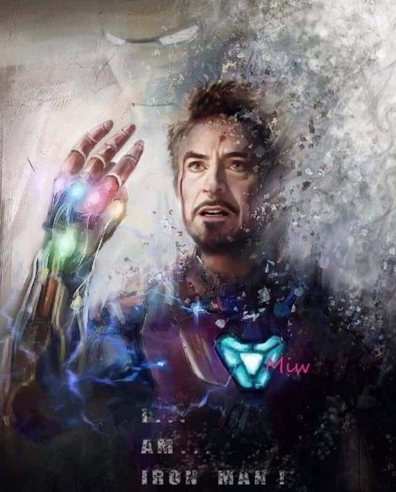

Formacion academica
- 2017-2018: Maestria en Gemas del Infinito-Asgard
- 1991-1993: Especializacion en Inteligencia artificial- Casa
- 1986-1989: Ingenieria Electrica - MIT
- 1986-1989: Ingeniera Electronica - MIT
Experiencia Laboral
- 2010-2018: Lider Vengadores
- 2006-2010: Iron Man
- 1991-2006: director ejecutivo de Star Industrias
